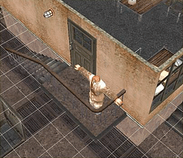
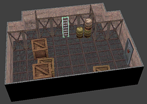
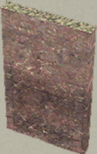
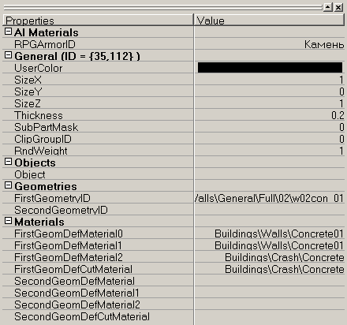
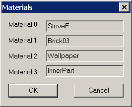
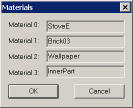
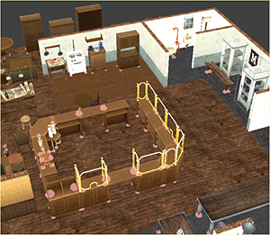
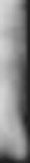
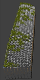

Рассмотрим пример создания самостоятельной карты и некоторые приёмы редактирования, используемые в процессе работы.
Общий замысел, определение размера карты
Перед началом работы у вас должны быть продуманы основные идеи, т.е. сценарий событий, которые будут реализованы на карте, и создан её эскиз. Сценарий должен включать события, ограниченные по времени, максимум в пределах 2-3 часов. Не стремитесь создать миссию, требующую стратегических действий и рассчитанную на сутки и более: и персонажи, и сами игроки будут слишком утомлены. Используйте примерно такой масштаб операций, который есть в сюжетных миссиях игры. Имея сценарий и эскиз карты, можно приступать к её созданию в редакторе, предварительно вам следует ознакомиться с доступными ресурсами редактора, его интерфейсом и сделать несколько простых тестовых карт для получения навыка работы с объектами и темплейтами.
Первое, с чего следует начать, — это создать базовый темплейт (т.е. темплейт, представляющий собой всю карту) и определить его параметры. Для создания нового темплейта необходимо в списке ресурсов Resource tabs... выбрать закладку Temlates и в нужной ветке дерева (папке) в контекстном меню, вызываемом по правой кнопке мыши, выбрать New Item..., задать размер карты и ввести её имя. Затем в свойствах созданного объекта следует определить такие основные поля, как DiplomacyID, ScriptID, и завести требующиеся практически всегда слои (layers) HeightMap и Floors.
Размеры и пропорции карты необходимо выбрать исходя из её наполнения, точнее, из её самых больших и трудно модифицируемых частей, определённых в сценарном замысле. Такой частью может быть, например, большое строение (дом, замок) или длинная дорога определённой формы. Основной темплейт должен полностью включать эту часть или части карты, в противном случае на определённом этапе работы вам придётся создать новую карту как темплейт большего размера и поместить всё сделанное там, что весьма нерационально. Совмещение разных темплейтов во многих случаях может создать определённые проблемы.
Итак, для примера сделаем карту небольшого размера с ремонтной мастерской в Германии, на которой и будут происходить действия миссии. Эта мастерская расположена на огороженной забором территории в промышленном районе на окраине немецкого города. Мастерская имеет важное значение с точки зрения продукции, которая там производится или складируется, поэтому мастерскую хорошо охраняют. Охрана есть на самой территории, охраняются единственные ворота, ведущие внутрь, наконец, по периметру с внешней стороны забора ходит патруль. Наша задача — проникнуть на территорию мастерской, уничтожить охрану и найти хранящуюся там продукцию, по возможности избегая потерь среди гражданских лиц. Группа начинает миссию рядом с небольшой полосой возвышения, покрытой травой, которая отделена деревьями от главной дороги, ведущей к мастерской. Умелое использование этой полосы облегчит выполнение миссии.
Рассчитаем примерные размеры, этажность и некоторые другие параметры карты. Любой персонаж занимает 1 узел сетки и, соответственно, блокирует проходимость в коридоре здания шириной 2 блока (tiles), т.е. 1 строительный блок. Здания имеют обычно минимум один коридор и комнаты, которые шире в несколько раз. Отсюда ширина зданий обычно находится в интервале от 2 блока * 4 до 2 блока * 16.
Наше здание представляет собой мастерскую, в которой могут размещаться автомобили. Кроме того, нам необходимо отобразить территорию, прилегающую к зданию. В промышленном районе территория используется достаточно активно, отдельные предприятия и мастерские плотно прилегают друг к другу, территории ограничены заборами — больших лесных массивов и сильно пересечённой местности здесь нет, есть лишь небольшие участки травы и отдельные деревья. Поэтому зададим размер карты ненамного больше, чем размер основного здания — 8х16 строительных блоков, т.е. 16x32 обычных блока.
Количество этажей не должно быть большим по многим причинам. Одна из них — сложность игрового дизайна, другая — технические ограничения, диктуемые мощностью компьютера. В нашем случае остановимся на 2 этажах с чердаком. Это не противоречит нашему основному замыслу и вполне достаточно, чтобы реализовать как различные архитектурные замыслы, так и игровые возможности.
После создания основного темплейта можно перейти к размещению на нём объектов, т.е. к строительству.
Строительство здания
При строительстве мы оперируем строительными элементами, которые по своим свойствам сильно отличаются от обычных объектов — растений, лежащих на земле предметов, мебели и т.д. Все строительные блоки автоматически выравниваются по сетке карты. Их разрушение происходит в соответствии с моделью взаимодействия строительных блоков и физического разрушения строений, которая реализована в игре.
Отдельные объекты разрушаются по заранее предопределенным фазам, не имеют жёсткой связи друг с другом, зато их можно размещать почти произвольно.
Устойчивость конструкции здания определяется в каждом узле строительного блока. У объектов её можно определить по соприкосновению точек опоры (AI-сфер) с другими устойчивыми объектами или строительными блоками (снимок слева).


Общую картину устойчивости строения можно посмотреть на правом снимке по комбинации LCtrl + B (см. «клавиатурные команды»). Яркие многогранники — это неустойчивые узлы. Наличие в конструкции строения неустойчивых узлов может привести к обрушению этой части строения сразу после входа на карту.
Строительство начинается с создания каркаса. В списке ресурсов необходимо найти строительные блоки из нужного материала, например, кирпича. Выбранный материал будет определять AI-свойства конструкции, т.е. пулепробиваемость и устойчивость к разрушению от взрывной волны. Внешний вид (облицовку) стен можно будет изменить позже. Выберите слой Walls (стены) и приступайте к строительству каркаса.
 При строительстве желательно учитывать историческую правдоподобность в архитектуре, например, для простых строений вроде ремонтной мастерской различные архитектурные «излишества» не очень уместны. В определённых местах необходимо установить строительные блоки с проёмами для размещения дверей и окон, которые будут установлены на следующем этапе.
При строительстве желательно учитывать историческую правдоподобность в архитектуре, например, для простых строений вроде ремонтной мастерской различные архитектурные «излишества» не очень уместны. В определённых местах необходимо установить строительные блоки с проёмами для размещения дверей и окон, которые будут установлены на следующем этапе.
После того как построен основной каркас здания, определены входы и выходы, можно приступать к строительству внутренних перекрытий. Полы обычно располагают на нижнем уровне соответствующего этажа. В некоторых случаях их можно размещать на высоте половины этажа в слое Intermediate floors — обычно это используется для создания лестничных пролётов между этажами или для реализации некоторых небольших подъемов внутри здания.
Связанные зоны
Связанные зоны представляют собой игровые зоны, между которыми можно перемещаться через специальные переходы (двери, лестницы, люки и т.д. , которые называются Passages). Для перехода из одной связанной зоны в другую вся группа должна собраться вокруг этого перехода.
В качестве примера создания связанной зоны рассмотрим подземный уровень мастерской. Эта зона имеет два перехода. Лестница, выделенная на снимке, связывает подземный уровень с первым этажом мастерской. Боковая дверь-шлюз ведет в соседнюю комнату, которая представляет собой другую связанную зону.
Для построения всех подземных уровней задаётся начальный уровень 0, т.е. поверхность земли, поскольку высадка персонажей должна происходить на 0 уровень. Чтобы текстура земли не была видна, в поле ShowTerrain следует задать false. Таким образом, игрок будет видеть только внутренний вид помещений, окружённых чёрным фоном.
Боковые поверхности всех подземных сооружений (стены по периметру уровня, пол и потолок, если есть) необходимо делать из неразрушаемых материалов. Неразрушаемые блоки на закладке Construction Kit можно найти по названию ресурсов, они оканчивается на «ud».
Чтобы логически соединить связанные зоны, сначала необходимо в поле Template1... Template3 ресурсной закладки ScenrioZones указать темплейты, которые будут объединены в одну сценарную зону. В закладке PassageObj находится список объектов, которые игра считает переходами. Для установки одного из этих объектов на игровую зону нужно найти объект по ссылке поля ObjectID. Затем перейдите на закладку Objects и установите объект (например, лестницу или шлюзовую дверь) на карту.
После установки объектов (Passages) на каждый из связанных темплейтов нужно указать параметры переходов. Параметры PassageZoneID и PassageObjectID необходимо прописывать в свойствах (properties) объектов, поставленных на данную зону. Эти два параметра образуют уникальный в пределах всей сценарной зоны идентификатор перехода. Он должен быть одинаковым у обеих частей перехода.
| PassageZoneID | Первый идентификационный параметр перехода |
| PassageObjectID | Второй идентификационный параметр перехода |
| APRadius | Радиус в единицах AP, в котором должна находиться группа персонажей игрока, чтобы появилась возможность воспользоваться переходом |
Внутреннее оформление зданий
Внутреннее оформление — одна из наиболее важных частей дизайна зданий. Начинать его лучше с покраски (отделки) стен и полов. Окраску стен можно выбрать из различных вариантов текстур штукатурки, обоев и кафеля.
Строительным блокам необходимо максимум 4 текстуры: текстура лицевой стороны (фасад), задней стороны (интерьер), торца и текстура разлома (для случая частичного повреждения строительного блока). Эти наборы и варианты текстур можно выбрать из списка ресурсов в окне выбора текстур отделки (Building brushes), нажав кнопку одного из вариантов.
Красить можно заранее созданными вариантами (наборами, presets) из 4 материалов или первым вариантом, который содержит только 1 материал. Первый набор позволяет закрашивать строительные блоки одной текстурой в зависимости от стороны, с которой она наносится. Это уменьшает вероятность ошибочной покраски разломов стен/полов, так как первый набор красит только видимые поверхности.
Различные по геометрии строительные элементы имеют различный mapping (отображение 3D-объекта в виде 2D-развертки для наложения текстур). Выбирать материалы для строительного элемента нужно в соответствии с его разверткой.

Для примера рассмотрим объект Wall02con из ресурсной закладки Constructor (отсюда берутся объекты для слоёв Floors, Solids, Walls.) с ID={35,112}. Загрузив его, можно в поле properties посмотреть или изменить текстуры, накладывающиеся по умолчанию. Обратите внимание, что изменение параметров в свойствах этого ресурса повлияет на его вид на всех зонах, где данный ресурс использовался.
- FirstGeomDefMaterial0 — материал лицевой стороны;
FirstGeomDefMaterial1 — материал тыльной стороны;
FirstGeomDefMaterial2 — материал торца;
FirstGeomDefMaterial3 — материал разлома.
| Изменение параметров окраски для конкретного участка стены на игровой зоне в окне редактирования зданий производится кистью. | |
|
| Пипеткой (Building brushes) удобно брать образец текстуры/набора текстур с других строительных блоков. Текстура или набор текстур будет сохранена в том варианте, который активен в данный момент. |
 Щёлкнув мышью на слое Wall, выберем строительный блок Wall02con. Возьмём пипеткой все четыре материала во второй набор текстур (set). Выбрать активный набор можно в окне Building Brushes. Теперь, пройдя кистью по аналогичным строительным блокам, мы сможем заменить их материалы на значения из Set2.
Щёлкнув мышью на слое Wall, выберем строительный блок Wall02con. Возьмём пипеткой все четыре материала во второй набор текстур (set). Выбрать активный набор можно в окне Building Brushes. Теперь, пройдя кистью по аналогичным строительным блокам, мы сможем заменить их материалы на значения из Set2.
 При нажатии кнопки напротив названия набора появится окно выбора материалов.
При нажатии кнопки напротив названия набора появится окно выбора материалов.
- Material 0: — материал лицевой стороны;
Material 1: — материал тыльной стороны;
Material 2: — материал торца;
Material 3: — материал разлома.
Некоторые строительные элементы имеют более сложный mapping, например камин Fireplace ID={651,1772} в том же ресурсе Construction.
 

- Material 0: — материал низа лицевой стороны;
Material 1: — материал тыльной стороны (материал, использующийся для покраски стен);
Material 2: — материал верха лицевой стороны;
Material 3: — материал торца и разлома.
После подбора подходящих текстур и последующей покраски строительных блоков необхо-димо подобрать предметы внутренней обстановки здания. Выбирать их следует по многим параметрам — таким как размер, цвет, назначение и др. Также следует учитывать ограниче-ния, накладываемые выбранным регионом по историческому и культурному признаку. Не следует без веских причин использовать английские предметы (например, маркированные ящики) в немецких зонах и наоборот. С другой стороны, многие объекты (цветы, стулья) не имеют особой национальной принадлежности и могут размещаться практически в любой обстановке.
Учитывая большое количество объектов интерьера, существующих в игре, и постоянную необходимость у разработчика карты вести поиск объектов, наиболее подходящих для конкретного места, группы объектов можно собирать в одном темплейте и затем выбирать (копировать и ставить на карту) нужные. Этот темплейт обычно представляет собой плоский участок поверхности, где произвольно расставлены или разложены предметы, близкие по теме. В ресурсной закладке Template\Examples\ есть готовые темплейты с такими подборками. В них можно посмотреть тонкости использования групп объектов — как их лучше совмещать друг с другом, места их применения и т.д.
Расположение объектов интерьера должно учитывать места их размещения и использования в реальной жизни, а также исходить из действий, которые происходили или могли происходить ранее в этом месте. С помощью расстановки отдельных статичных объектов можно передать процесс, который хотя и не реализуется игровой механикой, но имеет определённый сюжетный смысл. Например, грузовой автомобиль и группа небольших объектов (ящиков) рядом, которые могут по габаритам в нём поместиться, наводят на мысль о процессе погрузки или разгрузки. А рабочие (нейтральные персонажи), стоящие поблизости, будут восприниматься как участники этого процесса. Что именно находится в ящиках и как они связаны с событиями миссии, сможет выяснить сам игрок.
 Следует особо проверить ограничения при расстановке используемых объектов (usable objects) — к ним относятся все открываемые двери, окна, ящики, шкафы и т.д. Практически все эти объекты имеют анимацию при активации — например, окна открывают створки, у ящиков поднимается крышка и т.д. Поэтому после установки такого объекта нужно посмотреть оба его состояния (двойным щелчком по объекту в режиме редактирования строений). Необходимо убедиться, что анимированный объект не задевает другие объекты, а также обеспечить нормальный подход к нему, чтобы персонаж мог его использовать. При установке дверей в смежные углы комнаты или коридора необходимо проверить, чтобы траектории открывания дверей не пересекались, иначе игровой AI будет считать такую комбинацию дверей непроходимой.
Следует особо проверить ограничения при расстановке используемых объектов (usable objects) — к ним относятся все открываемые двери, окна, ящики, шкафы и т.д. Практически все эти объекты имеют анимацию при активации — например, окна открывают створки, у ящиков поднимается крышка и т.д. Поэтому после установки такого объекта нужно посмотреть оба его состояния (двойным щелчком по объекту в режиме редактирования строений). Необходимо убедиться, что анимированный объект не задевает другие объекты, а также обеспечить нормальный подход к нему, чтобы персонаж мог его использовать. При установке дверей в смежные углы комнаты или коридора необходимо проверить, чтобы траектории открывания дверей не пересекались, иначе игровой AI будет считать такую комбинацию дверей непроходимой.
Некоторые двери и окна можно заминировать, установив гранату-ловушку (прописывается в свойствах объекта), то же можно сделать и с ящиками. Часть дверей можно закрыть на замок, это заставит персонажей игрока или использовать отмычки, или выбивать двери взрывом, что сразу привлекает внимание противника.
В конечном счёте у вас должно получиться здание, которое удовлетворяет всем требованиям и ограничениям, сформулированным на этапе составления эскиза карты.
Проходимость
 При перемещениях в игре персонажи отыскивают кратчайший путь, по которому можно добраться в указанную точку. От того, какие участки карты проходимы, а какие нет, зависит удобство перемещения игрока по уровню. Проходимость лучше учитывать на всех этапах разработки карты. При составлении эскиза целесообразно наметить основные линии проходов, при расстановке объектов на карте можно оценивать изменение проходимости по «коробкам» объектов (bounding boxes) и по занимаемым ими узлам.
При перемещениях в игре персонажи отыскивают кратчайший путь, по которому можно добраться в указанную точку. От того, какие участки карты проходимы, а какие нет, зависит удобство перемещения игрока по уровню. Проходимость лучше учитывать на всех этапах разработки карты. При составлении эскиза целесообразно наметить основные линии проходов, при расстановке объектов на карте можно оценивать изменение проходимости по «коробкам» объектов (bounding boxes) и по занимаемым ими узлам.
Более точно контролировать проходимость на карте можно в игровом режиме, включив AI-геометрию (Ctrl+A) и, перебирая уровни (+ и — на цифровой клавиатуре), смотреть проходимость клавишей P. В игровом режиме можно увидеть места, где персонаж сможет пройти беспрепятственно, в каких узлах сетки он может находиться, и какие позы в этих местах могут быть реализованы. Если место, где по сценарному замыслу должен пройти персонаж, не обозначено узлом сетки, то оно не имеет проходимости и надо изменить расположение окружающих предметов. Обстановка в здании также должна также учитывать проходимость. Особо следует отметить расстановку вертикальных лестниц. Они состоят из двух частей: из собственно объекта и AI-геометрии. Объект обеспечивает визуальную часть лестницы, AI-геометрия — функциональную. Чтобы создать AI-геометрию лестницы, необходимо вызвать контекстное меню в режиме редактирования строений и выбрать New Ladder. На карте в режиме AI-геометрии лестница должна быть отмечена как проходимая (слой проходимости может быть немного отодвинут от самого объекта).
Обратите внимание на место входа персонажей на карту и проходимость вокруг этого места. Учтите, что в группе может быть до 6 персонажей (вместо 3, предлагаемых по умолчанию при тесте). Все 6 персонажей должны поместиться в окрестностях точки входа, не попав на непроходимые участки (островки) и не мешая друг другу. Особо проверьте место входа, если оно находится в подземелье или в узком коридоре: некоторые персонажи могут оказаться за пределами игровой зоны и управлять ими будет невозможно. При отладке проходимости в игровом режиме полезно использовать команду Ctrl+T для «телепортации» текущего персонажа в указанную мышью точку.
Рельеф
Редактор позволяет создавать рельеф различного вида и сложности. Наиболее доступный способ его создания — в основном окне редактора в 3D-виде. Необходимо выбрать слой HeightMap, затем в его диалоговом окне задать максимум и минимум возможной высоты на темплейте (от 0 до 10), после чего можно с помощью мыши начинать редактировать поверхность ландшафта (см. в описании интерфейса «Основное окно», «Создание или изменение рельефа»).
Другая возможность — экспорт и импорт карты высот по градациям серого в *.bmp-файле через меню Map, Import heightmap. Максимальная высота эквивалентна белому цвету, а минимальная — чёрному.
Редактировать рельеф можно как в базовом темплейте (т.е. на готовой карте), так и в одном из субтемплейтов (вложенных темплейтов). В свойствах темплейта можно задать 3 типа наложения HeighMap: Add, Normal, Subtraction. Add — режим сложения высот текущего темплейта (субтемплейта) и темплейта, в который он будет установлен, Normal — режим установки абсолютных высот субтемплейта, Subtraction — режим вычитания высот, обратный сложению. Режим сложения используется наиболее часто. Выбрав в поле HMBlendType режим Add, задаём для рельефа режим сложения высот. Теперь этот темплейт можно устанавливать на любую ровную поверхность базового темплейта.
На примере левая картинка представляет собой BMP-файл, отображающий карту высот для полосы возвышения, которая проходит вдоль дороги. Картинка справа показывает темплейт этой полосы в 3D-виде (включен «скелетный» режим и слой травы). Карта выполнена в градациях серого: минимальная высота соответствует чёрному цвету, максимальная — белому. Размеры картинки определяются так: по 1 точке на 1 блок (tile) на карте + по 1 дополнительному пикселу по сторонам X и Y. В примере слева для полосы размером 8х48 блоков требуется карта высот размером 9х49 точек (пикселов). После формирования полосы возвышения она целиком включается на карту как субтемплейт.
Рельеф также можно редактировать, включив режим подвалов выбором слоя Cellar. Это нужно для создания проходимости в подземной части строения.
Отдельная функция редактора — создание вертикальных колодцев (шахт) произвольной глубины по контекстному меню New Terrain Holes... в слое HeightMap. На данной карте это использовалось для вырезания земли под колодцем.
Расстановка персонажей
 С технической точки зрения расстановка персонажей не отличается от расстановки объектов на карте. Она выполняется в зависимости от типа миссии и в соответствии с конкретными идеями по реализации интересного игрового процесса. Каждый персонаж должен принадлежать «игроку» с определённым номером, число номеров зависит от числа сторон, участвующих в миссии. Персонажи игрока всегда имеют номер 0, номера другим персонажам необходимо задавать вручную. Им можно присваивать любой номер от 1 до 15. Все персонажи с одним номером считаются одной стороной, которой можно прописать различные отношения с другими сторонами (diplomacy). Отношения между всеми сторонами сводятся в таблицу дипломатии, которую можно найти в ресурсной закладке Diplomacies и задать в свойствах темплейта через таблицу DiplomacyID.
С технической точки зрения расстановка персонажей не отличается от расстановки объектов на карте. Она выполняется в зависимости от типа миссии и в соответствии с конкретными идеями по реализации интересного игрового процесса. Каждый персонаж должен принадлежать «игроку» с определённым номером, число номеров зависит от числа сторон, участвующих в миссии. Персонажи игрока всегда имеют номер 0, номера другим персонажам необходимо задавать вручную. Им можно присваивать любой номер от 1 до 15. Все персонажи с одним номером считаются одной стороной, которой можно прописать различные отношения с другими сторонами (diplomacy). Отношения между всеми сторонами сводятся в таблицу дипломатии, которую можно найти в ресурсной закладке Diplomacies и задать в свойствах темплейта через таблицу DiplomacyID.
Для персонажей предусмотрены следующие параметры:
GeneralMapID — принадлежность зоне с ID.
SelectionX — координата X центра «ящика выделения»
SelectionY — координата Y центра «ящика выделения»
SelectionZ — координата Z центра «ящика выделения»
MonsterID — ссылка на конкретного персонажа из Pers
Name — имя персонажа на игровой зоне, используется как идентификатор для скрипта (см. ниже).
PosX — координата X в блоках (tiles)
PosY — координата Y в блоках
Floor — этаж, на котором находится персонаж
Rotation — угол поворота относительно положения по умолчанию
ClueSlot — true, если персонаж является уликой (clue)
ClueInventorySlot — true, если в предметах этого персонажа может лежать улика
Player — номер игрока для дипломатии
RelativeLevel — уровень персонажа относительно игрока
Group — имя группы на игровой зоне, к которой принадлежит персонаж. Используется для объединения нескольких персонажей в группу.
Pose — поза по умолчанию (Crawl, Crouch, Stand)
Logic — логика по умолчанию (Fear, Guard, Roaming, Sentry )
RoamingRadius — радиус возможного перемещения персонажа, измеряемый в AP.
FearUseToHit — персонаж ищет укрытие
GuardAnimation — для персонажа используется анимация стражника (Guard)
Расстановка трофеев
Расстановка или раскладка трофеев (loot) — оружия, боеприпасов, инженерных и медицинских предметов — обычно производится в ящики достаточного размера. На карте трофеи желательно размещать с постепенным ростом ценности по ходу выполнения миссии, самые лучшие трофеи оставить ближе к финалу. Часть ящиков можно закрыть на замок и/или заминировать, можно поставить поблизости персонажи противника — всё это определяется сценарным замыслом.
Можно также использовать готовые темплейты с вариантами (All Templates\Chests\...) и линейной раскладкой трофеев на 15 уровней. Эти раскладки составлены для сценарных миссий таким образом, чтобы для каждого уровня сложности карты получались трофеи, наиболее подходящие по балансу (разумеется, вы можете сделать собственные раскладки). Каждый вариант имеет определённую вероятность появления при загрузке игры, которая задается в поле RNDWeight. Значение в этом поле представляет собой вес данного варианта относительно других вариантов, в сумме все варианты темплейта дают 100%. Поэтому удобнее приписывать им такие значения, чтобы в сумме получилось 100. Затем в свойствах объекта (поле RPGChestID) можно указать, какой RPG ящик в него поместить. Сам трофей прописывается в RPG ящиках (закладка Chests) с помощью полей Items и Level.
Отладка и трансляция модификации
В процессе разработки карты, начиная с самых ранних стадий, полезно периодически проводить рабочие тесты, запуская карту в редакторе и проверяя вид местности, проходимость отдельных участков, а на следующих стадиях — этапы выполнения миссии в обстановке, приближенной к реальной. При запуске миссии в редакторе на стороне игрока используется стандартная группа из 3 человек со стандартным снаряжением. Если по логике от участников группы требуется оснащение более высокого класса — например, вы разрабатываете миссию ближе к финалу кампании, для теста можно выложить у точки входа ряд трофеев, которые группа будет подбирать и затем начинать миссию (позже, при отладке в реальных условиях кампании эти трофеи следует удалить). Аналогичный приём для выдачи группе начального снаряжения можно использовать, если вы создаёте отдельную миссию.
Параметры тестовых персонажей можно изменить с помощью скриптовых команд через консоль (полный список скриптов смотрите в Приложении 6). Для корректного теста уровень персонажей должен соответствовать уровню миссии. Например, чтобы дать главному герою 5 уровень, необходимо ввести в консоли одну из следующих команд (первая обращается непосредственно к главному герою, вторая адресована персонажу с номером 0 в группе, т.е. к крайнему левому персонажу на игровой панели, а это и есть главный герой):
@UnitSetXPLevel(GetHero(), 5)
@UnitSetXPLevel(GroupGetUnit(GetParty(),0), 5)
Примечание: знак «@» используется в консоли для ввода строк, содержащих скриптовые функции, чтобы отличать их от консольных команд. В скриптах, создаваемых в редакторе, этот знак не нужен. В скриптах, вводимых в консоли, нельзя записывать последовательность команд с переносом на следующую строку. В принципе в консоли можно объявлять переменные или функции, использовать циклы, операторы перехода и т.д., но все команды должны размещаться в пределах одной строки. Персонажа можно также указать по имени, используя функцию GetUnit(name). Обратите внимание, что скриптовые имена могут не совпадать с именами в игровом интерфейсе.
@UnitSetXPLevel(GetUnit('fritz'), 4)
Если ваша модификация будет представлять собой отдельную миссию, начальные параметры членам группы лучше устанавливать этими же командами автоматически через скрипт, запускаемый при входе. С помощью скриптов вы также можете изменить состав группы по умолчанию.
После отладки миссии с запуском игры через интерфейс редактора можно выполнить трансляцию её в ресурсы для самостоятельного подключения к игре. Используйте меню Tools, Build или соответствующую кнопку на основной панели инструментов. Трансляция занимает довольно значительное время, при этом запускаются внешние утилиты из каталога .\Tools, которые выводят информацию в консольных окнах. После успешной трансляции все окна должны быть закрыты без сообщений об ошибках.
Подключите модификацию к игре и выполните её тест, введя в окне консоли команду tem-plate #### (см. следующий раздел). После успешного теста можно запаковать все ресурсы, приложить описание по подключению миссии и передать другим желающим для игры.
Подключение модификации к игре
После трансляции созданной модификации редактор создаёт в каталоге текущего профиля набор файлов, включающих все изменённые и добавленные данные. Прежде всего это файл game.db, описывающий структуру модификации, набор файлов *.res с ресурсами (имена и количество файлов зависит от вида изменённых ресурсов, при некоторых изменениях файлы *.res могут отсутствовать).
Обязательным компонентом модификации является текстовый файл с именем description.txt, который содержит строку с её названием (желательно не длиннее 30-35 символов). Эта строка будет выводиться в игре на экране подключения модификации. Файл description.txt необходимо создать вручную любым текстовым редактором в ANSI-формате. Перед тем, как придумать название, учтите, что латинские буквы смогут прочитать пользователи любых версий игры, а локализованный текст будет доступен только игрокам с такой же локализованной версией.
Набор файлов модификации можно переносить на любой компьютер с установленной игрой Операция Silent Storm: Часовые и подключать их в игровом интерфейсе; при этом не требуется наличия установленного редактора.
Чтобы модификацию можно было подключить к игре, необходимо записать все файлы модификации в каталог с некоторым (произвольным) именем, который создан в каталоге игры, например <S3>\My_Russian_mod. Для удобства имя каталога может совпадать с названием модификации, хотя это не обязательно. После запуска игра обнаружит модификацию по файлу description.txt, и её можно будет подключить через пункт «Custom game» в главном меню игры Операция Silent Storm: Часовые. Дальнейшие действия зависят от типа модификации.
Подключение модификаций исходной игры и новых сюжетных линий
Модификации, меняющие параметры исходной сюжетной игры, начинают работать автоматически, для их запуска можно просто начать новую игру. Если изменения были внесены в ту или иную миссию или карту, они появятся в случае, если вы первый раз входите в эту миссию (в противном случае вместо модификации будет загружена запись оригинальной сюжетной миссии). Если изменения были внесены в RPG-систему, они начнут проявляться сразу или по мере получения вами предметов (оружия, боеприпасов и т.д.) с изменёнными параметрами.
Если модификация заменяет часть миссий в исходной игре или представляет собой новую сюжетную линию, для её запуска достаточно начать новую игру в соответствующей сюжетной линии (в зависимости от того, была ли включена в модификацию одна сторона-участница или обе).
Подключение одиночных миссий
Модификации, представляющие собой отдельную миссию, которые не заменяют сюжетные миссии в игре, недоступны напрямую из игрового интерфейса и требуют специальной команды для их подключения. Прежде всего, у вас должен быть разрешён доступ к консоли игры Операция Silent Storm: Часовые (по умолчанию вход в консоль отключен). Для этого в начало файла <S3>\cfg\autoexec.cfg необходимо добавить строку (выделена жирным):
//
wirbelwind
gfx_autodetect
//
После запуска игры следует открыть консоль клавишей <`> (или «тильда»). Если клавиша не задействована, добавьте в файл <S3>\cfg\input.cfg, в секцию Base строку (выделена жирным):
...
bind hqscreenshot 'RSHIFT' + 'SYSRQ'
bind showfps 'SCROLL'
bind console '`'
//
Для загрузки карты откройте окно консоли и наберите в нём следующую команду (вместо #### необходимо подставить номер карты — первое число в идентификаторе ID, который можно посмотреть в редакторе миссий):
template ####
- будет загружена карта (темплейт) с соответствующим номером. Например, для карты с номером темплейта 1000006, следует ввести команду template 1000006. Для выхода в главное меню воспользуйтесь игровым интерфейсом или используйте консольную команду mainmenu. Полный список консольных команд игры и их параметры можно получить, введя команду help (обращаем внимание, что поддержка по консольным функциям для конечных пользователей не предоставляется и за проблемы, связанные с ее использованием, разработчики отвечать не могут).
В миссиях, запущенных с помощью команды template ####, выбирать сторону, заходить на базу, набирать в группу других участников и менять снаряжение нельзя. Чтобы все перечисленные возможности стали доступны игроку, необходимо создать сюжетную последовательность миссий, которая образует самостоятельный сценарий. Этой теме посвящены следующие разделы Руководства.
При распространении созданных вами модификаций рекомендуем прилагать к ним краткое описание модификации и способ её подключения к игре. Такое описание поможет игрокам, которые не пользуются редактором и не знакомы с настоящим Руководством.